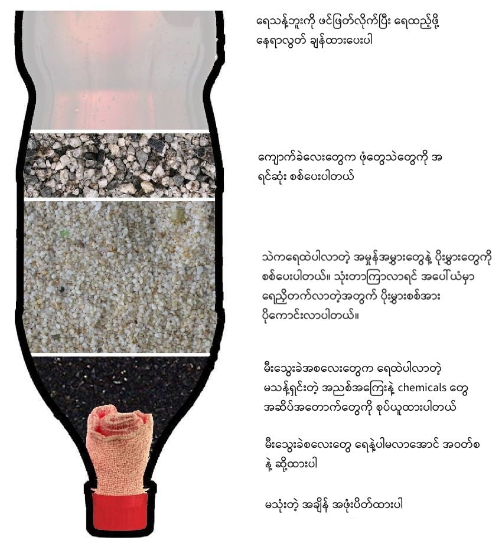

ဒီအခါ ရရာရေကို သောက်ရတဲ့ အခါ ရေမသန့်တဲ့ ပြဿနာ ကြုံရတတ်ပါတယ်။ အဲ့လို အခါမျိုးမှာ အလွယ်တကူ ကိုယ်တိုင်လုပ်နိုင်တဲ့ ရေစစ် ရှိမယ်ဆိုရင် ရေကြည်ကြည်သန့်သန့်လေး သောက်နိုင်တာပေါ့။
တောထဲ တောင်ထဲမှာ အလွယ်တကူ ရနိုင်တဲ့ ပစ္စည်းတွေနဲ့ အလွယ်တကူ ကိုယ်တိုင် လုပ်နိုင်တဲ့ သဘာဝ ရေစစ် လုပ်နည်းဖြစ်ပါတယ်။ ရေကြည်ကြည်သန့််သန့် စစ်ပေးနိုင်သလို ရေထဲပါတဲ့ အဆိပ်အတောက်တွေ၊ ဓါတုပစ္စည်းတွေနဲ့ ပိုးမွှားတွေကိုလဲ အထိုက်အလျှောက် ဖယ်ရှားပေး နိုင်ပါတယ်။
ဒီရေစစ် ပြုလုပ်ဖို့ လိုအပ်တဲ့ ပစ္စည်းတွေ အားလုံးကို တောထဲ တောင်ထဲမှာ အလွယ်တကူ ရနိုင်ပါတယ်။ ရေစစ်ဘူး လုပ်ဖို့ ပလပ်စတစ် ရေသန့်ဘူးခွံကလွဲလို့ ကျန်တာအားလုံးက သဘာဝ ပစ္စည်းတွေ ချည်းပါပဲ။
သဘာဝ သောက်ရေသန့် ရေစစ် လုပ်ဖို့ လိုတဲ့ ပစ္စည်းတွေကတော့
- ရေသန့်ဘူးခွံ အဟောင်း (၁ လီတာနဲ့ အထက် ဘူး)
- အဝတ်စ အပိုင်း
- မီးသွေးခဲကျိုးများ
- သဲနု
- ကျောက်ခဲတုံးလေးများ
သဲ က အိမ်ဆောက်ရင် သုံးတဲ့ သဲဖြူမျိုးပါ။ တောထဲမှာတော့ အများအားဖြင့် မြစ်ကမ်းနားတွေမှာ ရနိုင်ပါတယ်။
ကျောက်ခဲက လမ်းခင်းရင် သုံးတဲ့ ကျောက်ခဲမျိုးပါ။ ကျောက်ခဲ အကြေလေးတွေပါ။ ကျောက်စရစ်ခဲသေးသေးလေးတွေဆိုလဲ ရပါတယ်။
ရေသန့်ဘူးကြီးကို ဖင်ဖြတ်ပါ
ရေသန့်ဘူး အနည်းဆုံး ၁ လီတာ အရွယ် ရှိရပါမယ်။ ကြီးလေ ကောင်းလေပါ။ သိပ်ကြီးတော့လဲ သယ်ရပြုရ ခက်မှာ တခုတော့ သတိထားဖို့ လိုပါမယ်။ ရေဘူးဖင်ဖြတ်ပြီး ရေဘူးကို ပြောင်းပြန် လှန်ပြီး ဘူးအဝသေး ဖက်ကို အောက်မှာ ထားပြီး ရေစစ်ရမှာ ဖြစ်ပါတယ်။ရေသန့်ဘူး အဝကို အဝတ်စနဲ့ ဆို့ပါ
အဝတ်စ သန့်သန့်နဲ့ ပုလင်းအဝကို ဆို့ထားခြင်းအားဖြင့် ရေစစ်တဲ့ အခါ အထဲမှာ ခံထားတဲ့ မီးသွေးတုံးလေးတွေ ပြုတ်မကျ ကုန်အောင် ကာကွယ်ပေးပါတယ်။ အဖုံးကို လွှင့်မပစ်ပဲ သိမ်းထားပါ။ ဒါမှာ အသုံးမပြုတဲ့ အခါမျိုးမှာ အထဲက ပစ္စည်းတွေ ထွက်မကျကုန်အောင် ပိတ်ထားလို့ ရပါတယ်။အောက်ဆုံးမှာ မီးသွေးခဲကျိုး အစလေးတွေ ထည့်လိုက်ပါ။
ရေသန့်ဘူး အောက်ဆုံးမှာ မီးသွေးခဲကျိုး အစလေးတွေကို လက် ၃-၄ လုံးလောက် ရောက်အောင် ထည့်လိုက်ပါ။ ဒီ မီးသွေးခဲ လေးတွေက ရေထဲ ပါလာတဲ့ ဓါတုပစ္စည်းတွေ၊အနံအသက်တွေနဲ့ အဆိပ်အတောက်တွေကို အထိုက်အလျှောက် ဖယ်ရှားပေးမှာ ဖြစ်ပါတယ်။သဲနုတလွှာ ခင်းပါ
မီးသွေးပေါ်က သဲနုနဲ့ လက် ၃ လုံးလောက် ရအောင် ထပ်ဖြည့်ပါ။ သဲက အိမ်ဆောက်ရင် သုံးတဲ့ သဲအဖြူမျိုး ဖြစ်ပါတယ်။ မြစ်ကမ်းနားတွေနားမှာ ဒီလို သဲမျိုးတွေ ရှာတွေ့နိုင်ပါတယ်။ ဘယ်မှာ ရှာရမှန်း မသိရင် ဒေသခံတွေဆီက မေးကြည့်ပါ။အပေါ်ဆုံးက ကျောက်ခဲကျိုးလေးတွေ ခင်းပါ
သဲနုရဲ အပေါ်ကနေ ကျောက်ခဲကျိုးလေးတွေ လက် ၃-၄ လုံးလောက် ထပ်ခင်းရပါမယ်။ ကျောက်စရစ်ခဲသေးသေးလေးတွေ၊ ကျောက်ခဲ သေးသေးလေးတွေ ရနိုင်တာ ထည့်လို့ရပါတယ်။
DIY ရေစစ် ဘယ်လို အလုပ်လုပ်သလဲ
ရေသန့်ဘူးကို ဖြတ်ထားတဲ့ အပိုင်းကို အပေါ်မှာ ထားပြီး ထောင်ထားရပါမယ်။အပေါက်ကျဉ်းဖက် အောက်ကနေ ကျလာတဲ့ ရေသန့်ခံဖို့ ခွက်ခံထားရ ပါမယ်။
အပေါ်ကနေ ရေလောင်းချလိုက်ရင် ပထမဆုံး အပေါ်ဆုံးက ကျောက်ခဲလေးတွေက ရေထဲပါလာတဲ့ ကြီးမားတဲ့ သဲလို အမှုန်အမွှားတွေကို စစ်ပေးပါတယ်။
အောက်က သဲက ပိုသေးငယ်တဲ့ အမှုန်အမွှားလေးတွေကို ဆက်စစ်ပေးပါတယ်။
သုံးတာကြာလာရင် သဲလွှာရဲ့ အပေါ်ဖက်ပိုင်းမှာ ရေညှိတက်လာပါလိမ့်မယ်။ ဒီရေညှိတွေက ရေထဲ ပါလာတဲ့ ပိုးမွှားတွေနဲ့ အဆိပ်အတောက်တွေကို ဖယ်ရှားပေးနိုင်တဲ့ သဘာဝ ပိုးသန့်ရေစစ် အနေနဲံ ဆောင်ရွက်ပေးပါလိမ့်မယ်။
အောက်ဆုံးက မီးသွေးခဲ လေးတွေကတော့ ရေထဲ ပါလာတဲ့ chemicals ဓါတုပစ္စည်းတွေ၊ ပိုးမွှားတွေ အစရှိတာတွေကို ဖယ်ရှားပေးပါတယ်။ ရေမှာ အနံရှိရင်လဲ ဒီမီးသွေးခဲလေးတွေက ဖယ်ရှားပေးနိုင်ပါတယ်။
ဒီရေစစ်ကို ပိုပြီး ထိရောက်စေလိုလျှင် ရေစစ်နှစ်ခုကို ဆင့်ပြီးလဲ သုံးလို့ရပါတယ် ဆိုတာလဲ ပြောကြားလိုပါတယ်။
အောက်က video မှာလဲ အသေးစိတ် ကြည့်နိုင်ပါတယ်။
Home made water filter